Korea Code Fair 2026 · Structural health monitoring
SENTRY
A low-cost bridge screening system that learns what weather changes, then flags what weather cannot explain.
Read the build storyFootage: Nature-Stock-Footage via Pixabay
Project brief
Continuous screening between inspections.
SENTRY is not a replacement for a structural inspection. It is a first-line filter for small and medium bridges: a sensor node watches vibration, models the change that temperature and humidity normally cause, and sends the remaining signal through an unsupervised anomaly detector. The output is an alarm, its severity relative to the threshold, and the feature group that drove it.
The 840/840 result is from the controlled aluminum bridge model, not a field claim about real bridges. SENTRY remains a screening prototype whose alarms must be confirmed by qualified inspection.
01 · Why it exists
The dangerous interval is the time between checks.
Periodic inspection is necessary, but corrosion, fatigue, and boundary-condition changes accumulate continuously. SENTRY began with a simple question: can a low-cost node make that interval observable?

Long-term corrosion and damage accumulated in the cantilever walkway. One person died and one was injured.

Corrosion had been documented, but repair was delayed before the bridge failed during service.
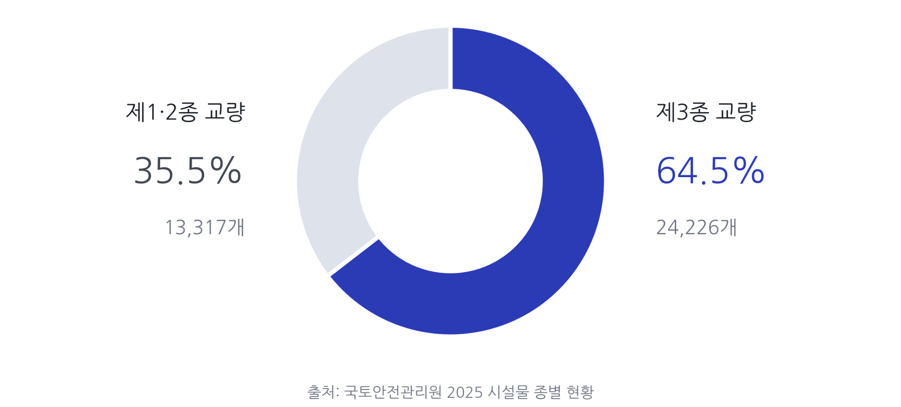
A monitoring blind spot
High-precision SHM does not scale down cheaply.
Permanent structural-health-monitoring systems usually depend on precision accelerometers, dedicated acquisition hardware, or optical sensing infrastructure. That makes sense for major bridges, but leaves a wide gap between visual inspection and high-end continuous monitoring.
Screen continuously, inspect precisely.
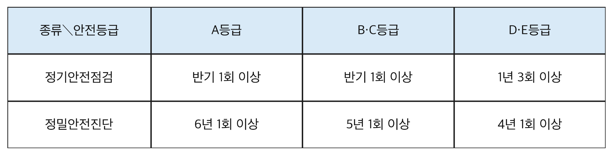
02 · The system
One loop from impact to inspection priority.
The deployed path is intentionally legible: sense, clean, compensate, reconstruct, explain, repeat.
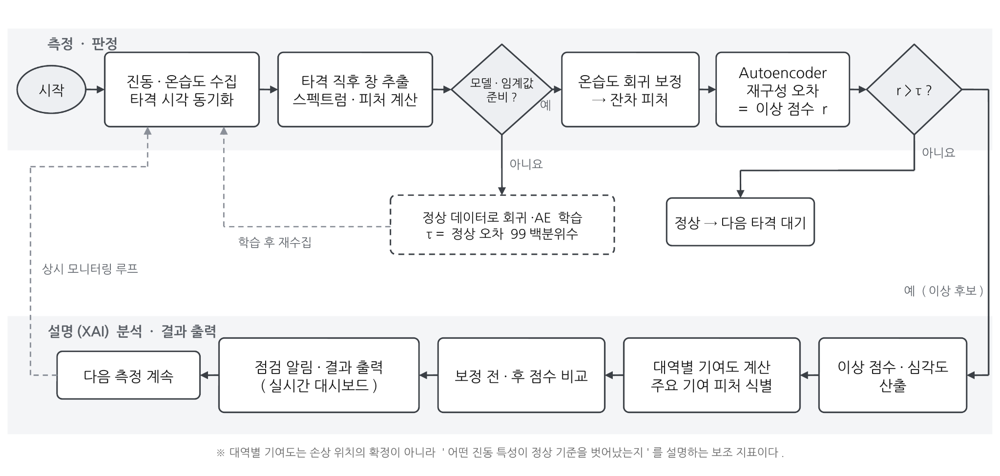
Excite
A solenoid tapper applies a 40 ms pulse every five seconds at a fixed location.
Measure
ADXL355Z acceleration at 500 Hz plus nearby DHT22 temperature and humidity.
Transform
A two-second post-impact window becomes eight log- and ratio-normalized features.
Compensate
Regression removes the feature shift explained by the measured environment.
Detect
An 8→3→8 autoencoder reconstructs healthy residuals and scores the mismatch.
Explain
Feature-group contributions point toward amplitude change, a frequency band, or both.
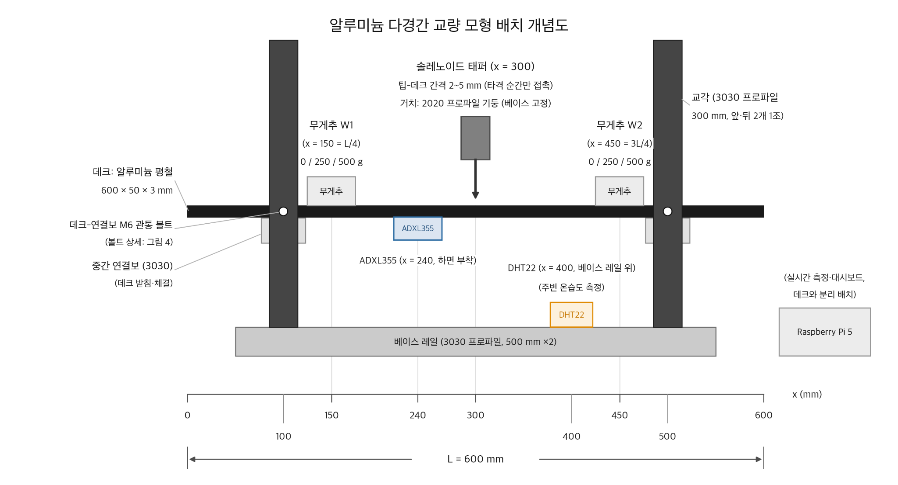
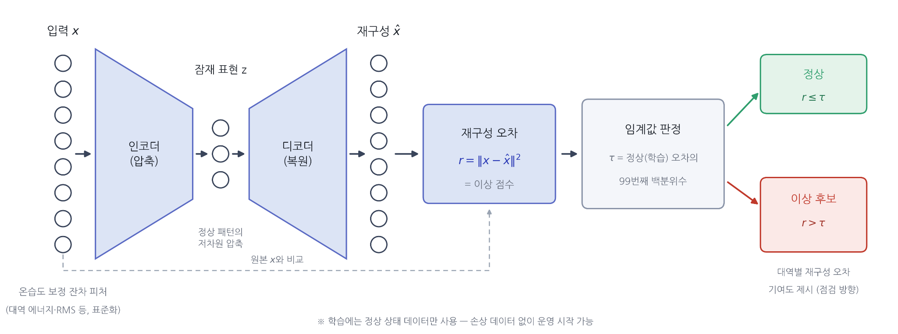
| Component | Role | Design choice |
|---|---|---|
| ADXL355Z | 3-axis vibration sensing | Low-noise MEMS sensor for modal and energy features |
| DHT22 | Temperature and RH | Measures environmental drift near the accelerometer |
| Raspberry Pi 5 | Collection, control, analysis, UI | Runs the entire real-time path on one edge device |
| Aluminum model | Repeatable structural testbed | Sharper resonance and bolt-defined boundary conditions |
| Solenoid tapper | Automated excitation | Removes variation in strike force, location, and timing |


03 · v1 → v2
The first prototype did not fail. It exposed what had to change.
v1 proved that the full data path could run on inexpensive hardware. It also made two limitations impossible to ignore: foam board blurred resonance peaks, and manual tapping added more variation than the structural change itself.
Version 1 · June

Fast proof of concept
55 cm foam-board bridge, 200 Hz sensing, four-second windows, manual excitation, and a linear reconstruction model.
- Verified sensor → feature → correction → alarm flow
- Showed a humidity-block FAR change from 17.5% to 9.1%
- Exposed weak peak repeatability and excitation variance
Version 2 · July
Controlled instrument
60 cm aluminum multi-span model, 500 Hz sensing, two-second windows, automated tapping, and a nonlinear autoencoder.
- Normal peak fixed at 101.0 Hz across 60 ambient evaluation windows
- Expanded the test matrix from 9 to 27 conditions
- Separated mass-type and boundary-type alarm signatures
| Dimension | v1 | v2 |
|---|---|---|
| Model / excitation | Foam board · manual strike | Aluminum multi-span · 40 ms auto tap every 5 s |
| Sampling / window | 200 Hz · 4 s | 500 Hz · 2.0 s after impact |
| Conditions | 9 | 27 · 1,380 analysis windows |
| Healthy peak | 22.6 Hz with window-level drift | 101.0 Hz · 0.0 Hz SD across 60 ambient evaluation windows |
| Features / model | Raw-scale · linear/PCA equivalent | Log + energy ratios · nonlinear 8→3→8 AE |
| Damage detection | 18.8–29.7% of mass-change windows exceeded threshold | 840/840 damage windows exceeded threshold |
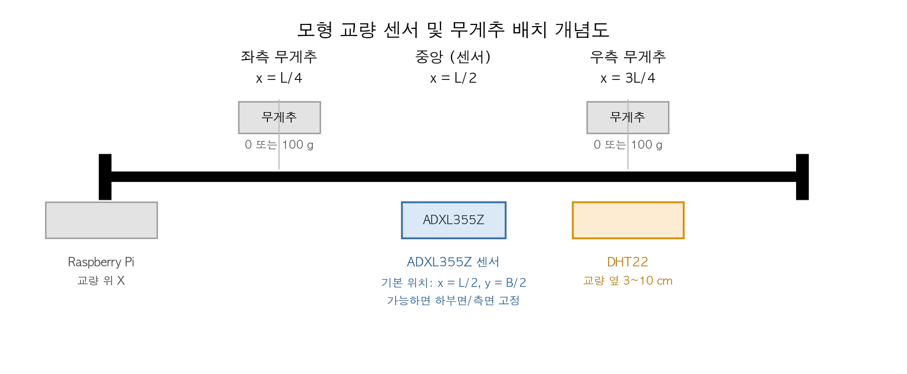
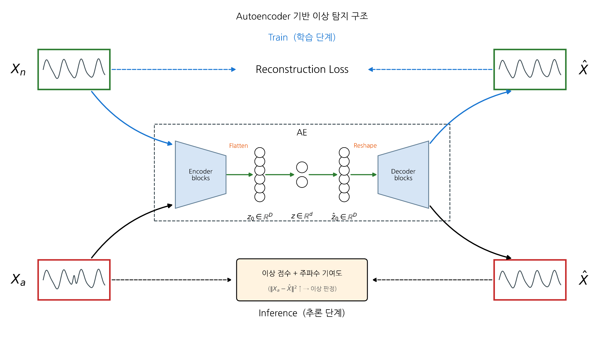
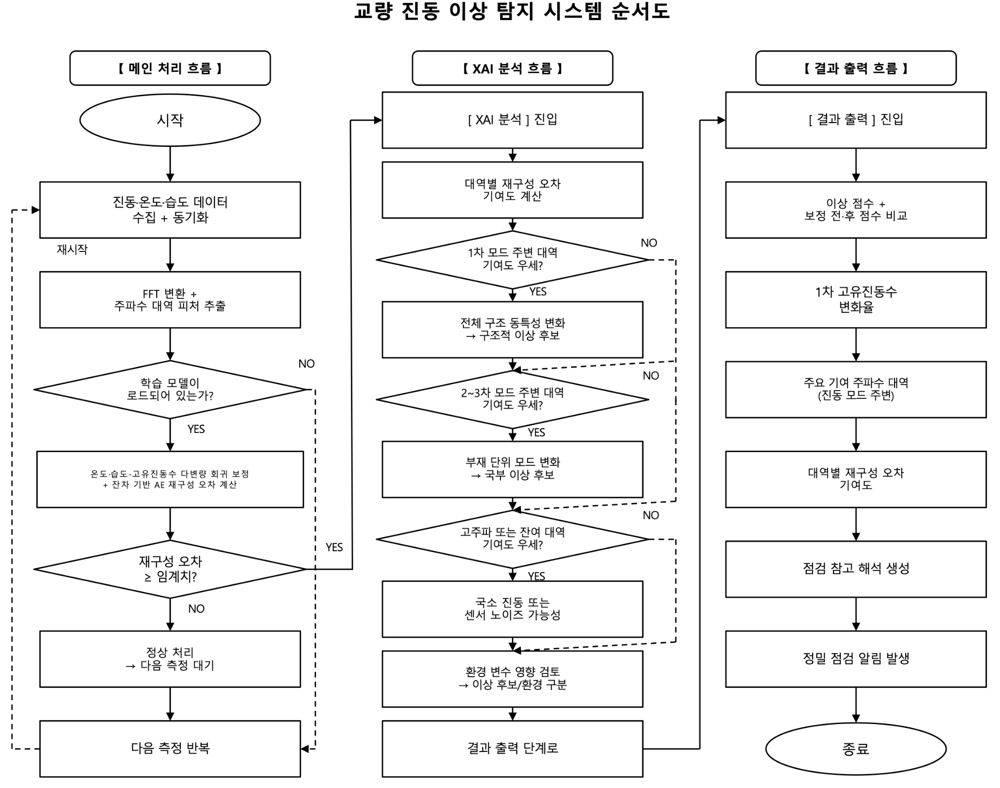
Build v1
Connect sensors, fabricate the foam model, collect nine conditions, extract spectral features, and close the first end-to-end loop.
Redesign
Turn the observed limits into requirements: lower damping, repeatable boundaries, fixed excitation, and faster sampling.
Build v2
Assemble the aluminum rig, tapper circuit, Pi 5 analysis server, and real-time dashboard; execute the 27-condition matrix.
Interrogate results
Compare correction models, analyze mode switching, test five seeds, and map feature contributions to damage families.

The design principle
Every upgrade answers an observed failure mode.
The material, tapper, window, normalization, and model architecture were not cosmetic upgrades. Each one traces directly to an artifact in v1 data: smeared peaks, inconsistent strikes, raw-scale sensitivity, or low damage recall.
Open the v1 context plates
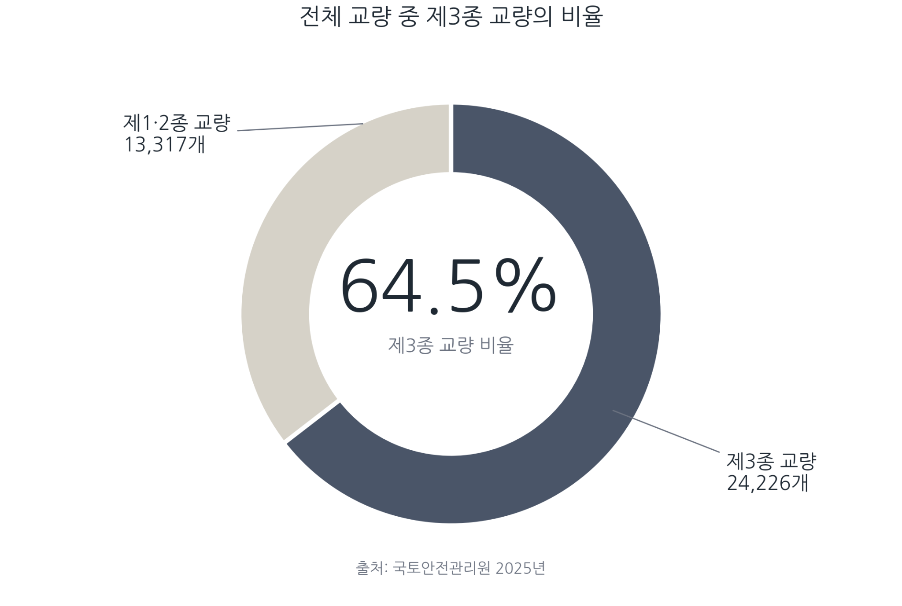
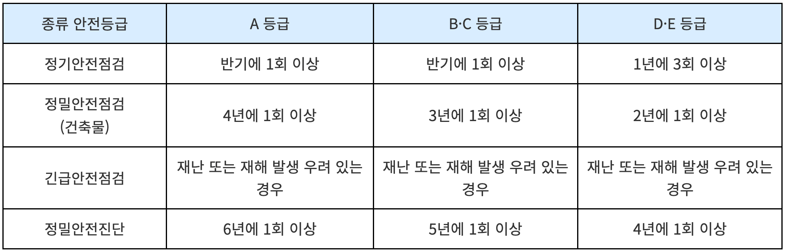
04 · Validation
Three layers of evidence, and a record of what did not generalize.
Real-bridge data checks the environmental premise. The foam prototype checks the complete low-cost pipeline. The aluminum model stress-tests detection and explanation under controlled structural changes.
openLAB
Nine months of undamaged data from a 45 m, three-span research bridge.
Foam v1
Nine combinations of mass distribution and environmental state.
Aluminum v2
27 combinations of environment, added mass, and bolt loosening.
| Model | Train | Evaluate | Train anomaly ratio | Evaluation FAR |
|---|---|---|---|---|
| Uncorrected AE | 263 | 263 | 1.1% | 1.90% |
| Temperature residual AE | 263 | 263 | 1.1% | 1.52% |
| Temperature + RH residual AE | 263 | 263 | 1.1% | 1.52% |
Honest read: environmental compensation removed one false alarm in 263 evaluation samples. The direction was consistent, but the effect was small and humidity added no measurable benefit in this dataset.
v1 evidence
Useful signal, weak repeatability.
The first experiment improved F1 from 0.075 to 0.370 with temperature-and-humidity residuals, but recall remained low. The figures below made the cause visible.
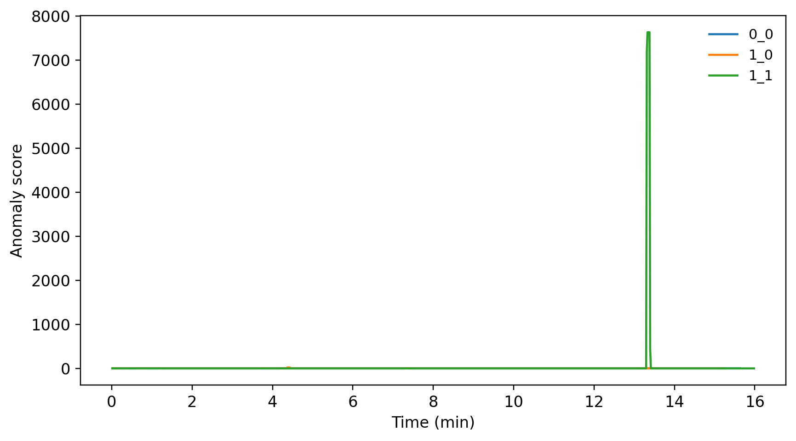
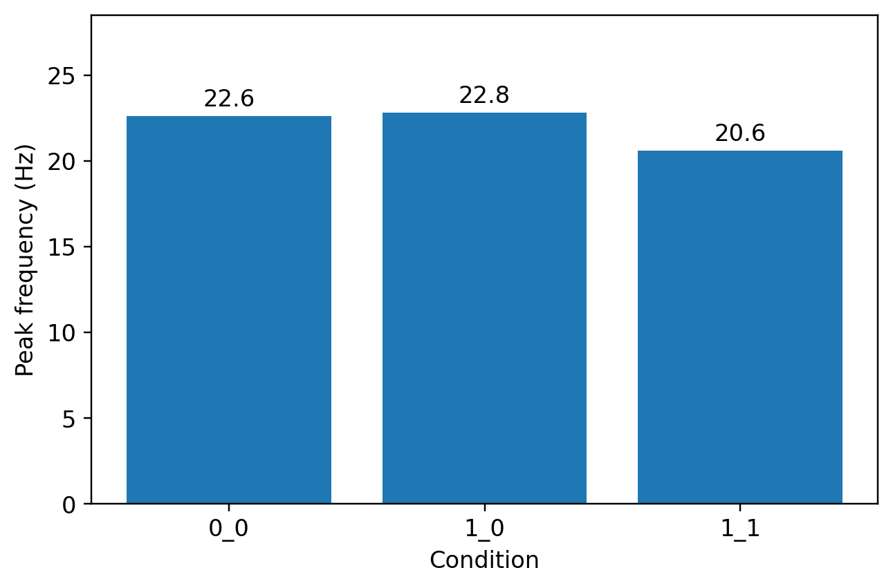
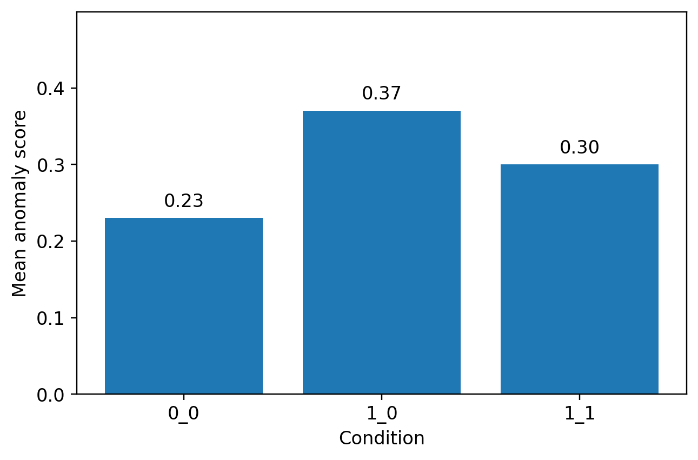
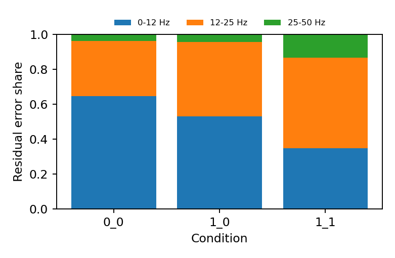
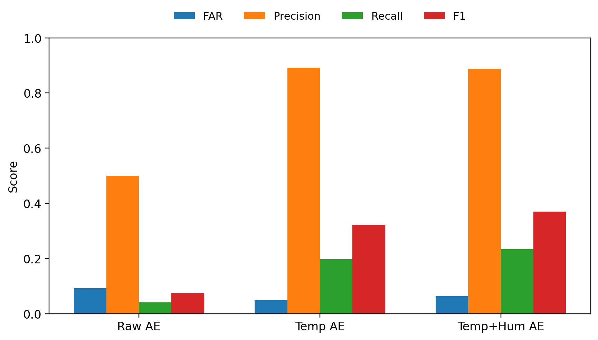
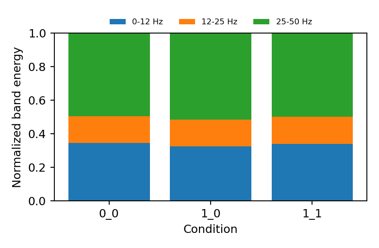
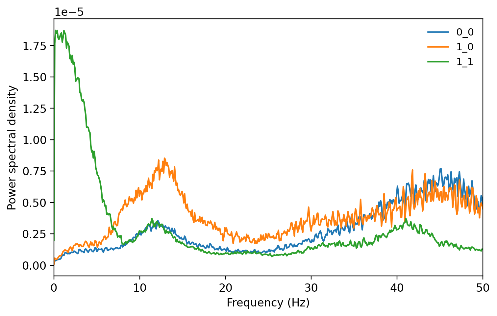
| Model | FAR | Precision | Recall | F1 |
|---|---|---|---|---|
| Uncorrected | 0.092 | 0.500 | 0.041 | 0.075 |
| Temperature residual | 0.048 | 0.892 | 0.197 | 0.323 |
| Temperature + RH residual | 0.063 | 0.888 | 0.234 | 0.370 |
v2 evidence
Controlled excitation changed the quality of the question.
With the baseline stabilized, the experiment could separate environmental variation from two structural-change families: added mass and loosened deck-to-connector bolts.
| Factor | Levels | How it was applied |
|---|---|---|
| Environment (T·H) | No change · humidity · temperature + RH | Ambient, humidifier enclosure, or controlled heating with measured DHT22 values |
| Mass (M) | 0 · 500 · 1,000 g | Asymmetric 500 g at x=150 mm or symmetric 500 g at x=150/450 mm |
| Bolt (B) | 0 · 1 · 2 loosened | Predefined deck-connector bolts loosened by half a turn, stepwise |
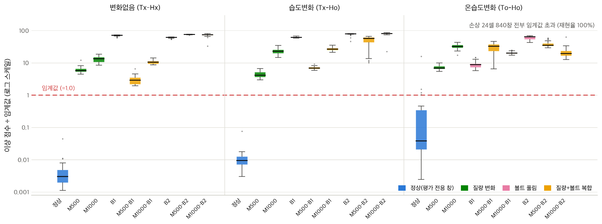
840 of 840 damage windows detected by the T·RH residual model.
4 of 90 normal evaluation windows exceeded threshold.
Precision 0.995 and recall 1.000 for the residual model.
Open the complete v2 condition table
| Condition group | Median peak | Shift vs 101 Hz | Mean score | Over threshold |
|---|---|---|---|---|
| Baseline · Tx-Hx-M0-B0 | 101.0 Hz | 0.0% | 0.03 | 0/30 |
| Humidity · Tx-Ho-M0-B0 | 101.0 Hz | 0.0% | 0.07 | 0/30 |
| Temperature + RH · To-Ho-M0-B0 | 90.0 Hz | -10.9% | 4.13 | 4/30 |
| M500-B0 | 36.0 Hz | -64.4% | 33.2 | 105/105 |
| M1000-B0 | 36.0 Hz | -64.4% | 128.4 | 105/105 |
| M0-B1 | 64.0 Hz | -36.6% | 264.7 | 105/105 |
| M0-B2 | 40.0 Hz | -60.4% | 370.3 | 105/105 |
| M500-B1 | 44.0 Hz | -56.4% | 75.4 | 105/105 |
| M1000-B1 | 81.0 Hz | -19.8% | 108.3 | 105/105 |
| M500-B2 | 66.0 Hz | -34.7% | 307.1 | 105/105 |
| M1000-B2 | 53.0 Hz | -47.5% | 323.4 | 105/105 |
| Model | FAR | Precision | Recall | F1 |
|---|---|---|---|---|
| Uncorrected | 0.022 | 0.998 | 0.993 | 0.995 |
| Temperature residual | 0.033 | 0.996 | 1.000 | 0.998 |
| Temperature + RH residual | 0.044 | 0.995 | 1.000 | 0.998 |
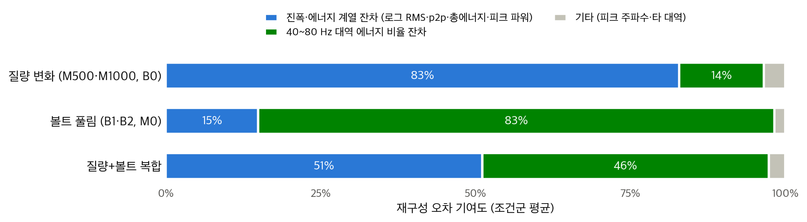
Explainability
The alarm profile changes with the failure family.
Added mass is dominated by amplitude and energy residuals. Bolt loosening is dominated by the 40–80 Hz energy-ratio residual. A combined condition carries both signatures.
- Mass: 83% amplitude/energy contribution
- Bolt: 83% 40–80 Hz band contribution
- Combined: 51% amplitude/energy + 46% band contribution
What the experiment taught me
Peak frequency alone is not a severity meter.
Several conditions jump between vibration modes instead of moving down one frequency axis. For example, M1000-B1 lands at 81 Hz while M500-B1 lands at 44 Hz. The detector works because it evaluates a multivariate residual pattern, not because it assumes that more damage always means a lower single peak.
05 · Operator view
A result that can be acted on.
The Pi 5 serves a live dashboard with waveform, impact spectrum, threshold ratio, peak frequency, RMS, environment, and contribution bands.
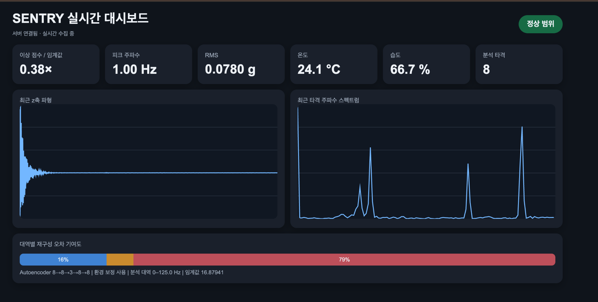
06 · Outcome
What is complete, and what remains.
Built
- Low-cost sensing and automated excitation hardware
- Environmental residual pipeline and nonlinear autoencoder
- Real-time edge dashboard and contribution analysis
- Public-data, v1, and v2 validation trail
Not yet claimed
- Field reliability on an in-service bridge
- Damage-type diagnosis from one sensor
- Cross-bridge severity calibration
- Replacement of statutory inspection
Next build
Move from a controlled model to a sensor network.
The next technical steps are multi-point sensing, wireless time synchronization, longer seasonal baselines, and a field pilot where SENTRY's alarms can be compared against professional inspection findings.
Source artifacts
The original documents remain available as evidence, not as the page.
Project visuals and data figures come from the SENTRY team's v1 and v2 work descriptions. Hero footage: “Golden Gate Bridge, Fog” by Nature-Stock-Footage, used under the Pixabay Content License.